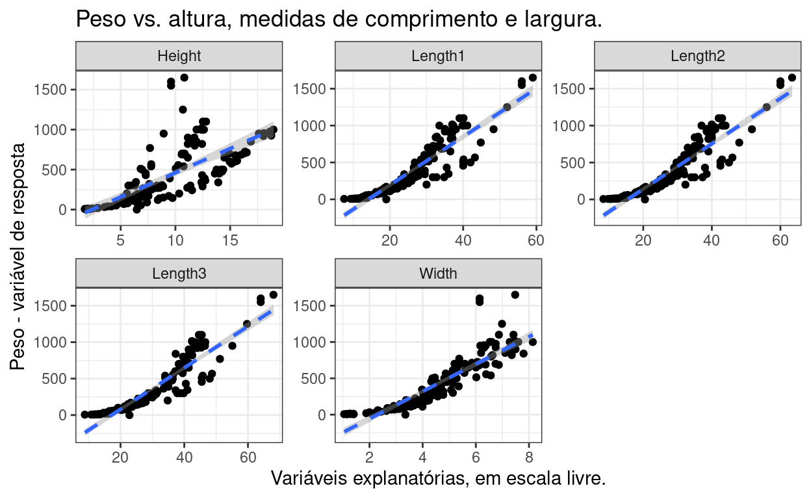
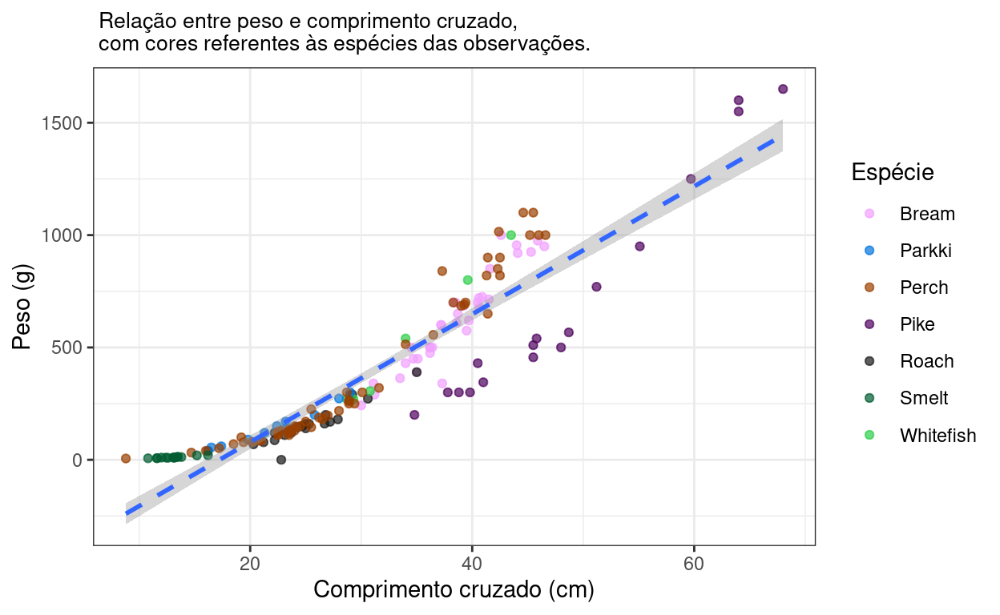
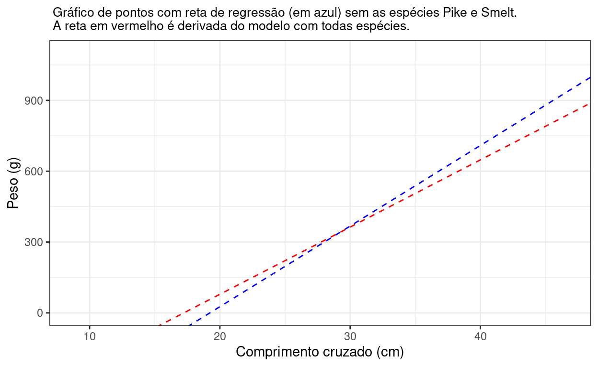
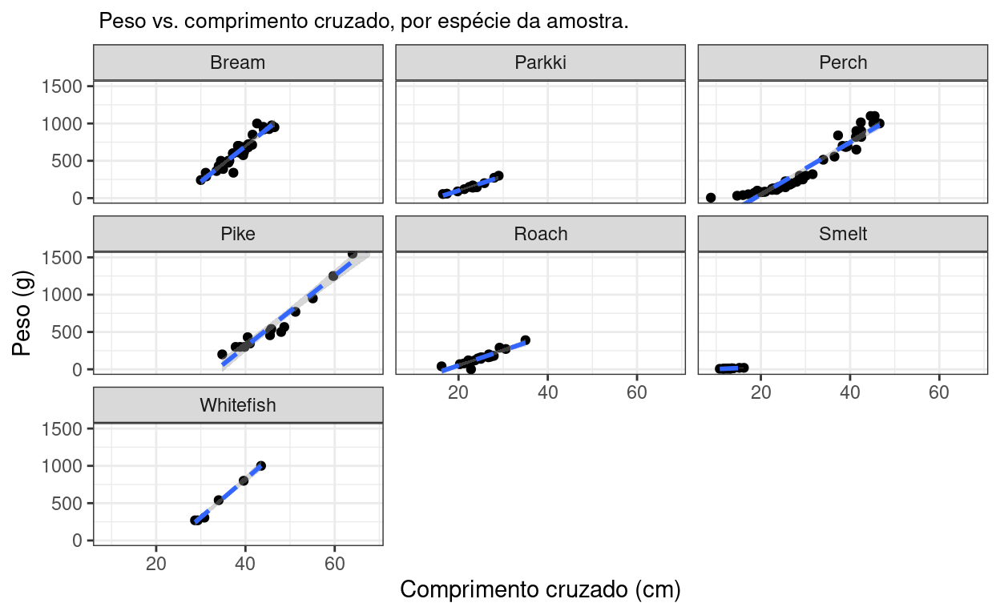

Para fazer essa análise, vou usar o dataset Fish quem contém diferentes medidas de peixes registrados em um mercado. Versões com código podem ser conferidas no meu Kaggle (em inglês) ou nas minhas Github pages.
Meu objetivo aqui vai ser escolher uma variável de resposta e a melhor variável que explique seu comportamento.
Primeiro vou dar uma olhada no dataset:
Os nomes de coluna não são muito intuitivos, então vou descrever cada um:
Species: nome da espécie mensurada.Weight: Peso do peixe em gramas.Length1: comprimento vertical em cm.Length2: comprimento diagonal em cm.Length3: comprimento cruzado em cm.Height: altura em cm.Width: largura diagonal em cm.
Vou definir como minha variável de resposta o peso do peixe, esse é o valor que quero prever em função das demais variáveis explicativas. Para dar início à análise, entao, vou plotar a correlacao de minha varável de resposta com todas as demais variáveis explanatórias e calcular o \(R^2\) de cada caso.
Para plotar tudo de uma vez preciso alterar um pouco a tabela:

Dá para perceber que a correlação do peso com as demais medidas é positiva em todos casos, em alguns mais e outros menos, pela inclinação das retas de regressão (tracejadas azuis). Entretanto, fica difícil entender a robustez dos modelos (na forma de \(R^2\)) visualmente. Portanto, vou computar esses valores em uma tabela e ordenar em ordem decrescente:
# A tibble: 5 x 2
variables r_squared
<chr> <dbl>
1 Length3 0.852
2 Length2 0.844
3 Length1 0.839
4 Width 0.786
5 Height 0.525Essa tabela me dá os valores de \(R^2\) para cada modelo simples de peso e cada uma das outras variáveis independentemente (não sendo covariáveis).
As três medidas de comprimento são as que melhor descrevem o comportamento do peso. A altura é a medida menos robusta e a largura fica no meio do caminho. Os valores altos dos modelos que levam em consideração os diferentes tipos de comprimento apontam para uma possível colinearidade entre essas variáveis. Isso significa que, em um modelo multivariado, essas medidas provavelmente seriam redundantes.
Vou desenvolver isso um pouco mais a frente, mas por hora, como vou fazer uma regressão simples, vou usar a variável Length3 como explanatória, dado que ela resultou no maior valor de \(R^2\).
Abaixo, os coeficientes do modelo:
Call:
lm(formula = Weight ~ Length3, data = fish)
Coefficients:
(Intercept) Length3
-490.40 28.46 Segundo esse modelo, existe um incremento de cerca de 28 gramas no peso de um peixe conforme a largura cruzada do peixe aumenta em uma unidade, ou seja, 1 centímetro.
Abaixo, vou plotar o gráfico da regressão, já atribuindo cores diferentes aos pontos para as diferentes espécies da amostra:

Um fator interessante de se notar é a provável alta influência dos pontos associados à espécie Pike (em roxo), na inclinação e erro associado da reta, devido ao alto valor tanto de peso quanto de comprimento cruzado de alguns de seus pontos. Essa espécie provavelmente tem maiores valores, em média, de distância de cook para suas observações, o que vai influenciar no comportamento da reta. Podemos checar isso sumarizando o modelo e esses valores, por espécie:
# A tibble: 7 x 2
Species mean_cooksd
<chr> <dbl>
1 Pike 0.0428
2 Smelt 0.0116
3 Whitefish 0.00550
4 Perch 0.00528
5 Bream 0.00325
6 Roach 0.00150
7 Parkki 0.000504Como previsto, a espécie Pike de fato tem a maior média para os valores de distância de cook associados seus pontos, seguida pela espécie Smelt (verde escuro), que no gráfico tem uma concentração de pontos próximos de zero. Esses pontos, em ambas espécies, se distanciam bastante da reta de regressão, explicando o comportamento das médias de distância de cooks associadas a elas.
Vou checar mais a fundo a influência que estas espécies tem na reta e no valor de \(R^2\).
Lembrando que o modelo tem \(R^2\) de 0.85, vou verificar qual valor que \(R^2\) assume retirando essas espécies dele:
[1] 0.9109848Retirando as espécies, a robustez do modelo aumenta significativamente. A inclinação da reta também se altera, conforme podemos ver na mudança do coeficiente associado à variável explanatória de comprimento cruzado:
Call:
lm(formula = Weight ~ Length3, data = .)
Coefficients:
(Intercept) Length3
-656.48 34.14 Para enxergar essa alteração melhor ainda, podemos sobrepor as retas de cada modelo:

Visualizando dessa forma fica mais claro o comportamento da nova reta em comparação com a reta associada ao primeiro modelo (tracejada vermelha). Essa inclinação indica uma correlação mais forte entre as variáveis na ausência das espécies Pike e Smelt, fato reforçado quando se calcula os índices de pearson para os dois casos:
# A tibble: 2 x 2
df indice_pearson
<chr> <dbl>
1 df_original 0.923
2 df_sem_especies_ruido 0.954Finalmente, sem aprofundar muito, existe outra maneira prática de verificar o quanto os pontos das espécies podem estar influenciando na qualidade da regressão, que é plotando as curvas de regressão por espécie:

A espécie Pike é a única com valores de peso maiores que 1500. Já a espécie Smelt tem apenas valores próximos de zero, reforçando um pouco da influência destas na qualidade da regressão. Essa informação é redundante com o gráfico onde os pontos foram pintados de acordo com as espécies de referência, mas é uma maneira distinta de enxergar essa questão.
Esse tipo de fator levanta a questão: quais espécies escolher para estabelecer um modelo geral? Uma maneira de fazer isso seria calculando o \(R^2\) associado ao modelo escolhido por espécie, mas também indicando o número de observações por espécie existe nos dados:
# A tibble: 5 x 2
variables r_squared
<chr> <dbl>
1 Length3 0.852
2 Length2 0.844
3 Length1 0.839
4 Width 0.786
5 Height 0.525# A tibble: 7 x 4
Species variables r_squared n
<chr> <chr> <dbl> <int>
1 Whitefish Length3 0.993 6
2 Pike Length3 0.958 17
3 Parkki Length3 0.943 11
4 Perch Length3 0.921 56
5 Smelt Length3 0.898 14
6 Bream Length3 0.897 35
7 Roach Length3 0.842 20Quando analisadas em separado, a espécie Pike (que apresentava altos valores de distância cook, em média), não apresenta um \(R^2\) tão baixo. Mas é importante observar que o número de observações da maior parte das espécies da amostra é bem baixo (menor que 20). Apenas as espécies Perch e Bream tem mais de 20 observações. A espécie Whitefish, que contém o maior valor de \(R^2\) em seu modelo, contém apenas 6 observações. Se a ideia fossse utilizar um modelo generalista, seria razoável manter apenas espécies número alto de observações (20 talvez) ou aumentar o número de medidas das espécies subamostradas.
Colinearidade de variáveis
Como observado, todas medidas de comprimento apresentaram altos valores de \(R^2\) quando correlacionados com o peso. Recapitulando a tabela:
# A tibble: 5 x 2
variables r_squared
<chr> <dbl>
1 Length3 0.852
2 Length2 0.844
3 Length1 0.839
4 Width 0.786
5 Height 0.525Esse comportamento pode ser um indicativo de colinearidade, o que faria sentido dada a natureza similar dessas medidas, em termos de proporção. Isso pode ser conferido computando os fatores de inflação de variância (vif) para cada variável, em um modelo que leva em conta todas variáveis:
Length1 Length2 Length3 Height Width
1681.49649 2084.25783 422.46825 14.57009 12.27536 Os altos valores de VIF para as medidas de comprimento indicam que essas variáveis são, de fato, redundantes para o modelo, não fazendo diferença qual é utilizada: ambas tem boa perfomance para explicar os valores de peso.
Esse comportamento pode ser visualizado se plotarmos, por exemplo, o peso em função de dois comprimentos quaisquer. Infelizmente o gráfico interativo não se dá muito bem com o distill (que uso para publicar esses posts), então apenas a imagens estática está disponível abaixo:

Felizmente, o gráfico interativo na íntegra pode ser acessado nas Github pages ou Kaggle dessa análise. O que ele mostra é que ambas variáveis de comprimento tem valores muito próximos em todas observações, por isso os pontos se comportam de maneira similar a uma reta, mesmo tendo três dimensões. A colinearidade das variáveis também é reforçada pela alta densidade dos valores de peso no plano, quando os valores de comprimento são altos, independente de qual está sendo levado em consideração.
Conclusões
As medidas de comprimento são boas preditoras de peso, além de serem colineares.
Diferentes espécies tem diferentes influências na qualidade da regressão.